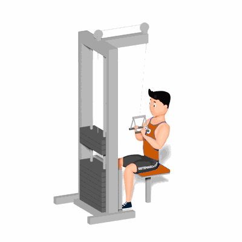

Puxador com Triângulo

É um excelente exercício para o treino de costas, trazendo benefícios como a melhora de postura, correção de desiquilíbrio e definição muscular.
Ficha Técnica
Tipo: Musculação
Grupo Muscular: Costas
Aparelho: Nenhum
Músculos: Nenhum
Como realizar
- Sente-se no aparelho, de modo que os joelhos fiquem apoiados sob o apoio frontal e os pés apoiados no chão;
- Segure o triângulo de modo que os cotovelos fiquem levemente flexionados e mantenha os cotovelos paralelos;
- Contraia o abdome, mantenha a coluna reta;
- Dobre os cotovelos e puxe o triângulo para baixo, em direção ao seu peito;
- Desça até que o triângulo fique abaixo de seu queixo;
- Estique os braços lentamente, voltando à posição inicial.
 RC STORE
RC STORE